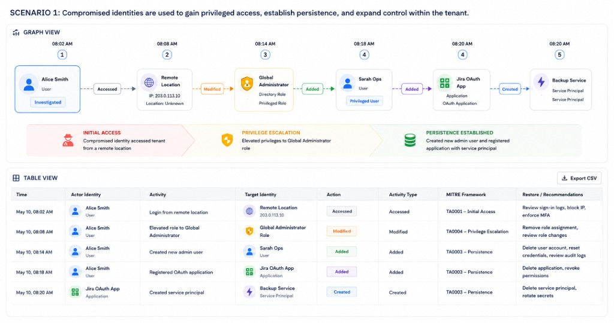
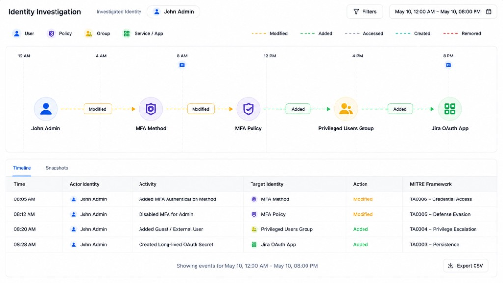
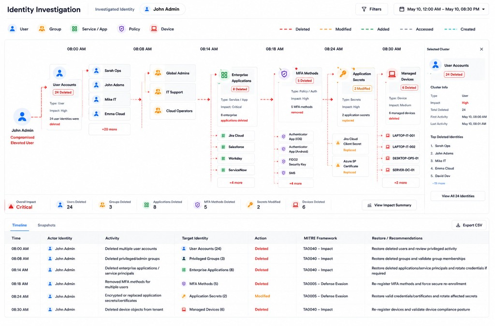
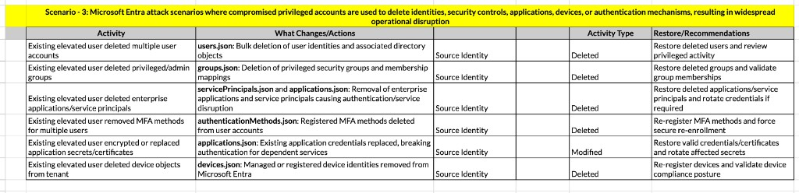

Security and backup teams can see that an identity was compromised — but had to read a table, row by row, to find out what it actually touched. I redesigned that table as a graph: the identity at the center, everything it touched plotted around it by type.
RoleUX Designer
ScopeIdentity activity as a node-based attack graph
StakeholdersSecurity & backup teams · Security Scientist · Visual team · Engineering
DesignersUX Designer · Visual team
The problem
Security teams can see that an identity was compromised — but not the path of what it did next.
They waste time rebuilding the story from rows in a table, so recovery is slow and trust stays broken longer.
What’s wrong with the table
Events don’t show connections
Each row is one change. Nothing draws the line from the compromised account to what it touched.
Responders rebuild the story by hand
During an incident, they scroll and piece together what happened before and after.
Different things look the same
A password change, a group change, and a policy change all look like equal rows — so urgency is hard to spot.
Volume turns into noise
Dozens of events across many object types bury the path instead of revealing it.
Existing
Time-ordered table
The old screen was a long list of changes in time order. You could find a single event, but not see what happened next — or how far the damage spread.
Preferred
Node-based graph
Same details, drawn as a map: the identity in the middle, everything it touched around it. You see the path and the blast radius before digging into any single row.
This screen sits on top of backup recovery that cannot be tampered with. Its job is to answer “what changed, when, and by whom” before anyone trusts a restore plan.
Who this is for
Two jobs. One shared picture.
Opens every day: alerts when a login or account looks stolen.
Problem: they know something is wrong, but not what the attacker did next or how many systems are at risk.
Needs: a clear path of damage so they can tell Backup Admin what is safe to restore.
Opens every day: the backup console when it’s time to restore systems.
Problem: they can roll systems back, but can’t tell which backup point is still clean. Guess wrong, and the stolen account comes back with the same access.
Needs: a clear “before the damage” moment so restore does not bring the attacker back.
Both roles need the same picture. Neither can move to recovery without it.
Inspiration
n8n — each node type has its own icon and connector style.
Wiz Security Graph — attack path reads left-to-right with no legend.
n8nWiz Security Graph
AI Explorations
Scenarios from the Security Scientist

Scenario 1
One-way timed sequence
Easy at a glance — role elevation → new admin → app registration reads as one line.
Equal weight on every node — nothing signals which step actually matters.
Breaks when actions branch — only works while everything chains in one line.

Scenario 2
Action-first timeline
Edges carry the color — MFA, guest privilege, OAuth secrets read without opening every node.
Nodes stay thin — you see what happened, not the full detail.
Same ceiling as Scenario 1 — nest or multiply the actions and it breaks.

Scenario 3
Clustered bulk deletes
Bulk deletes across types — users, apps, MFA, secrets, and devices.
One readable cluster — a hundred deleted devices don’t become a hundred identical rows.

Realisation
Flows aren’t always linear
Not always linear — a compromised identity can fan out into many activities at once.
Parallel, not sequential — one login can spawn MFA disable, a role change, and new tokens together.
One origin, many forks — the graph has to stay readable no matter how far it fans out.
Multi-branch activity graph — one identity, parallel paths
Design system
A working kit for iteration
I built a basic design system to support quick iterations and early explorations — shared with the visual team, engineering, and senior stakeholders so decisions stayed aligned before polish.
Component sheet — Magnify to inspect detail
Start / branch nodes + action chips — origin, forks, and lane edges read without a side legend.
Detail on the node, depth on hover — type, name, time, change visible; MITRE, severity, actor in the tooltip.
Design process
Iterations
Iteration 1
Timeline + activity
Hard to find a node — once branches grew, locating a specific step in the path got slow.
No layout rule for engineering — freeform branches had nothing stable to build against.
Auto-plot scattered events — the same events landed in random spots every run; nothing was reproducible.
Iteration 2
Type swim lanes
Y = identity type, X = time — a fixed grid instead of freeform branches.
Empty lanes drop away — density matches what actually happened, not the full taxonomy.
Stable to plot — engineering and auto-layout can place nodes without scattering.
Axis
Contents
Y
Identity types (active only)
X
Time
Nodes
Objects in their lane
Edges
Actions
Pre final
Approved structure, before visual polish
Type lanes, metrics, and action chips locked as the approved structure.
Interaction model first — visual polish comes after the structure holds.
Final
Final design after visual enhancements
Outcome
First node-based identity graph from scratch
Built the first node-based graph system for Active Directory, Entra ID, and Okta recovery — identity at the center, everything it touched plotted by type so security and backup teams can see spread without reading a log table row by row.
Closing
Learning
Invent the system
First node-based design — no existing interaction model to adapt. Built the design system from scratch, then pressure-tested it with security researchers against privilege escalation, defense evasion, and bulk deletes.
Reuse the pattern
The pattern that came out of this screen is one I’d reach for again outside this specific product.
Confidentiality note: This project is under NDA. Design is complete and moving into development.
Interface redrawn and figures synthesized for case study presentation.
The core architectural logic and UX constraints remain true to production.